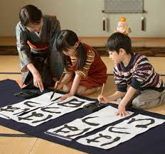
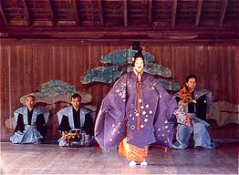
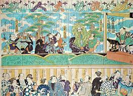
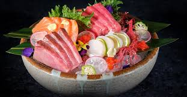
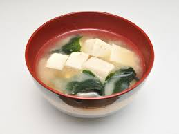
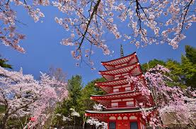
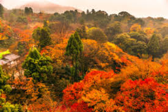

About Japan
Japan's culture and lifestyle are rich and diverse, influenced by centuries of tradition, as well as modern advancements.Traditional Arts and Culture: Japan boasts a myriad of traditional arts such as tea ceremony
(chanoyu)
,flower arranging (ikebana)
, calligraphy (shodo)

, and traditional theater forms like Noh

, Kabuki
, and Bunraku

.
These arts often embody principles of harmony, simplicity, and discipline.
Cuisine: Japanese cuisine is renowned worldwide for its emphasis on fresh, seasonal ingredients and meticulous preparation. Staple foods include rice, seafood, vegetables, and soy products like
tofu
, Sushi
,
sashimi

, ramen

tempura

miso soup

are just a few examples of popular Japanese dishes.
Etiquette and Social Norms: Japanese society places high value on politeness, respect, and harmony. Bowing is a common form of greeting, and it's important to remove shoes before entering someone's home or certain traditional establishments. Silence is often valued in social interactions, and speaking softly is considered polite.
Fashion: Japanese fashion is diverse and constantly evolving, blending traditional elements with modern trends. From elegant kimono and yukata to avant-garde street fashion in districts like Harajuku, fashion in Japan reflects creativity and individual expression.
Technology and Innovation: Japan is known for its cutting-edge technology and innovations. It's home to major corporations like Sony, Toyota, and Nintendo, and has played a significant role in the development of robotics, electronics, and transportation.
Nature and Seasonal Celebrations: The changing seasons are deeply ingrained in Japanese culture, influencing everything from cuisine to festivals. Cherry blossom viewing
(hanami)

in spring, enjoying fireworks (hanabi)
in summer, and autumn foliage viewing (momijigari)

are cherished traditions.
Work Culture: Japanese work culture places a strong emphasis on dedication, teamwork, and diligence. Salarymen (white-collar workers) often work long hours, and loyalty to one's company is highly valued. However, there are growing movements advocating for work-life balance and reforms in this area.
Pop Culture: Japan is a global leader in pop culture, producing influential manga, anime, video games, and music. Anime and manga have a huge international following, and Japan's entertainment industry continues to shape trends worldwide.
Shintoism and Buddhism: Shintoism and Buddhism are the two main religions in Japan, and they coexist harmoniously. Shintoism focuses on reverence for nature and spirits (kami), while Buddhism emphasizes enlightenment and the teachings of Buddha. Many aspects of Japanese culture, including festivals and rituals, are influenced by these religions.
Hospitality: The concept of
omotenashi
, or selfless hospitality, is deeply ingrained in Japanese culture. Whether in restaurants, hotels, or everyday interactions, Japanese people strive to provide exceptional service and make guests feel welcome.